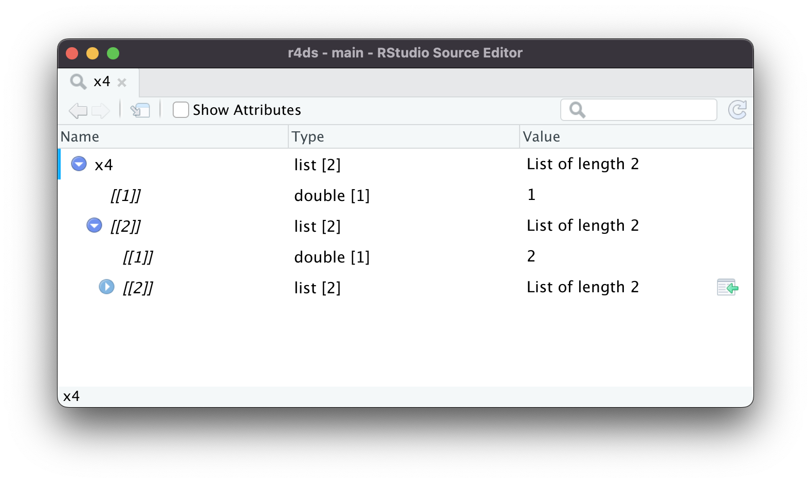

25 Data rectangling
You are reading the work-in-progress second edition of R for Data Science. This chapter should be readable but is currently undergoing final polishing. You can find the complete first edition at https://r4ds.had.co.nz.
25.1 Introduction
In this chapter, you’ll learn the art of data rectangling, taking data that is fundamentally tree-like and converting it into a rectangular data frames made up of rows and columns. This is important because hierarchical data is surprisingly common, especially when working with data that comes from a web API.
To learn about rectangling, you’ll first learn about lists, the data structure that makes hierarchical data possible in R. Then you’ll learn about two crucial tidyr functions: tidyr::unnest_longer(), which converts children in rows, and tidyr::unnest_wider(), which converts children into columns. We’ll then show you a few case studies, applying these simple function multiple times to solve real problems. We’ll finish off by talking about JSON, the most frequent source of hierarchical datasets and a common format for data exchange on the web.
25.1.1 Prerequisites
In this chapter we’ll use many functions from tidyr, a core member of the tidyverse. We’ll also use repurrrsive to provide some interesting datasets rectangling practice, and we’ll finish up with a little jsonlite, which we’ll use to read JSON files into R lists.
25.2 Lists
So far we’ve used simple vectors like integers, numbers, characters, date-times, and factors. These vectors are simple because they’re homogeneous: every element is same type. If you want to store element of different types in the same vector, you’ll need a list, which you create with list():
x1 <- list(1:4, "a", TRUE)
x1
#> [[1]]
#> [1] 1 2 3 4
#>
#> [[2]]
#> [1] "a"
#>
#> [[3]]
#> [1] TRUEIt’s often convenient to name the components, or children, of a list, which you can do in the same way as naming the columns of a tibble:
x2 <- list(a = 1:2, b = 1:3, c = 1:4)
x2
#> $a
#> [1] 1 2
#>
#> $b
#> [1] 1 2 3
#>
#> $c
#> [1] 1 2 3 4Even for these very simple lists, printing takes up quite a lot of space. A useful alternative is str(), which generates a compact display of the structure, de-emphasizing the contents:
As you can see, str() displays each child of the list on its own line. It displays the name, if present, then an abbreviation of the type, then the first few values.
25.2.1 Hierarchy
Lists can contain any type of object, including other lists. This makes them suitable for representing hierarchical (tree-like) structures:
This is notably different to c(), which generates a flat vector:
As lists get more complex, str() gets more useful, as it lets you see the hierarchy at a glance:
As lists get even large and more complex, even str() starts to fail, you’ll need to switch to View()1. Figure 25.1 shows the result of calling View(x4). The viewer starts by showing just the top level of the list, but you can interactively expand any of the components to see more, as in Figure 25.2. RStudio will also show you the code you need to access that element, as in Figure 25.3. We’ll come back to how this code works in Section 28.4.5.



x4[[2]][[2]][[2]].25.2.2 List-columns
Lists can also live inside a tibble, where we call them list-columns. List-columns are useful because they allow you to shoehorn in objects that wouldn’t wouldn’t usually belong in a tibble. In particular, list-columns are are used a lot in the tidymodels ecosystem, because they allows you to store things like models or resamples in a data frame.
Here’s a simple example of a list-column:
There’s nothing special about lists in a tibble; they behave like any other column:
df |>
filter(x == 1)
#> # A tibble: 1 × 3
#> x y z
#> <int> <chr> <list>
#> 1 1 a <list [2]>Computing with list-columns is harder, but that’s because computing with lists is harder in general; we’ll come back to that in Chapter 29. In this chapter, we’ll focus on unnesting list-columns out into regular variables so you can use your existing tools on them.
The default print method just displays a rough summary of the contents. The list column could be arbitrarily complex, so there’s no good way to print it. If you want to see it, you’ll need to pull the list-column out and apply one of the techniques that you learned above:
Similarly, if you View() a data frame in RStudio, you’ll get the standard tabular view, which doesn’t allow you to selectively expand list columns. To explore those fields you’ll need to pull() and view, e.g. df |> pull(z) |> View().
It’s possible to put a list in a column of a data.frame, but it’s a lot fiddlier because data.frame() treats a list as a list of columns:
data.frame(x = list(1:3, 3:5))
#> x.1.3 x.3.5
#> 1 1 3
#> 2 2 4
#> 3 3 5You can force data.frame() to treat a list as a list of rows by wrapping it in list I(), but the result doesn’t print particularly usefully:
data.frame(
x = I(list(1:3, 3:5)),
y = c("1, 2", "3, 4, 5")
)
#> x y
#> 1 1, 2, 3 1, 2
#> 2 3, 4, 5 3, 4, 5It’s easier to use list-columns with tibbles because tibble() treats lists like either vectors and the print method has been designed with lists in mind.
25.3 Unnesting
Now that you’ve learned the basics of lists and list-columns, lets explore how you can turn them back into regular rows and columns. We’ll start with very simple sample data so you can get the basic idea, and then switch to more realistic examples in the next section.
List-columns tend to come in two basic forms: named and unnamed. When the children are named, they tend to have the same names in every row. When the children are unnamed, the number of elements tends to vary from row-to-row. The following code creates an example of each. In df1, every element of list-column y has two elements named a and b. If df2, the elements of list-column y are unnamed and vary in length.
Named list-columns naturally unnest into columns: each named element becomes a new named column. Unnamed list-columns naturally unnested in to rows: you’ll get one row for each child. tidyr provides two functions for these two case: unnest_wider() and unnest_longer(). The following sections explain how they work.
25.3.1 unnest_wider()
When each row has the same number of elements with the same names, like df1, it’s natural to put each component into its own column with unnest_wider():
df1 |>
unnest_wider(y)
#> # A tibble: 3 × 3
#> x a b
#> <dbl> <dbl> <dbl>
#> 1 1 11 12
#> 2 2 21 22
#> 3 3 31 32By default, the names of the new columns come exclusively from the names of the list, but you can use the names_sep argument to request that they combine the column name and the list names. This is useful for disambiguating repeated names.
df1 |>
unnest_wider(y, names_sep = "_")
#> # A tibble: 3 × 3
#> x y_a y_b
#> <dbl> <dbl> <dbl>
#> 1 1 11 12
#> 2 2 21 22
#> 3 3 31 32We can also use unnest_wider() with unnamed list-columns, as in df2. Since columns require names but the list lacks them, unnest_wider() will label them with consecutive integers:
df2 |>
unnest_wider(y, names_sep = "_")
#> # A tibble: 3 × 4
#> x y_1 y_2 y_3
#> <dbl> <dbl> <dbl> <dbl>
#> 1 1 11 12 13
#> 2 2 21 NA NA
#> 3 3 31 32 NAYou’ll notice that unnested_wider(), much like pivot_wider(), turns implicit missing values in to explicit missing values.
25.3.2 unnest_longer()
When each row contains an unnamed list, it’s most natural to put each element into its own row with unnest_longer():
df2 |>
unnest_longer(y)
#> # A tibble: 6 × 2
#> x y
#> <dbl> <dbl>
#> 1 1 11
#> 2 1 12
#> 3 1 13
#> 4 2 21
#> 5 3 31
#> 6 3 32Note how x is duplicated for each element inside of y: we get one row of output for each element inside the list-column. But what happens if the list-column is empty, as in the following example?
df6 <- tribble(
~x, ~y,
"a", list(1, 2),
"b", list(3),
"c", list()
)
df6 |> unnest_longer(y)
#> # A tibble: 3 × 2
#> x y
#> <chr> <dbl>
#> 1 a 1
#> 2 a 2
#> 3 b 3We get zero rows in the output, so the row effectively disappears. Once https://github.com/tidyverse/tidyr/issues/1339 is fixed, you’ll be able to keep this row, replacing y with NA by setting keep_empty = TRUE.
You can also unnest named list-columns, like df1$y into the rows. Because the elements are named, and those names might be useful data, puts them in a new column with the suffix_id:
df1 |>
unnest_longer(y)
#> # A tibble: 6 × 3
#> x y y_id
#> <dbl> <dbl> <chr>
#> 1 1 11 a
#> 2 1 12 b
#> 3 2 21 a
#> 4 2 22 b
#> 5 3 31 a
#> 6 3 32 bIf you don’t want these ids, you can suppress this with indices_include = FALSE. On the other hand, it’s sometimes useful to retain the position of unnamed elements in unnamed list-columns. You can do this with indices_include = TRUE:
df2 |>
unnest_longer(y, indices_include = TRUE)
#> # A tibble: 6 × 3
#> x y y_id
#> <dbl> <dbl> <int>
#> 1 1 11 1
#> 2 1 12 2
#> 3 1 13 3
#> 4 2 21 1
#> 5 3 31 1
#> 6 3 32 225.3.3 Inconsistent types
What happens if you unnest a list-column contains different types of vector? For example, take the following dataset where the list-column y contains two numbers, a factor, and a logical, which can’t normally be mixed in a single column.
unnest_longer() always keeps the set of columns change, while changing the number of rows. So what happens? How does unnest_longer() produce five rows while keeping everything in y?
df4 |>
unnest_longer(y)
#> # A tibble: 5 × 2
#> x y
#> <chr> <list>
#> 1 a <dbl [1]>
#> 2 a <chr [1]>
#> 3 b <lgl [1]>
#> 4 b <fct [1]>
#> 5 b <dbl [1]>As you can see, the output contains a list-column, but every element of the list-column contains a single element. Because unnest_longer() can’t find a common type of vector, it keeps the original types in a list-column. You might wonder if this breaks the commandment that every element of a column must be the same type — not quite, because every element is a still a list, and each component of that list contains something different.
What happens if you find this problem in a dataset you’re trying to rectangle? There are two basic options. You could use the transform argument to coerce all inputs to a common type. It’s not particularly useful here because there’s only really one class that these five class can be converted to: character.
df4 |>
unnest_longer(y, transform = as.character)
#> # A tibble: 5 × 2
#> x y
#> <chr> <chr>
#> 1 a 1
#> 2 a a
#> 3 b TRUE
#> 4 b a
#> 5 b 5Another option would be to filter down to the rows that have values of a specific type:
df4 |>
unnest_longer(y) |>
rowwise() |>
filter(is.numeric(y))
#> # A tibble: 2 × 2
#> # Rowwise:
#> x y
#> <chr> <list>
#> 1 a <dbl [1]>
#> 2 b <dbl [1]>Then you can call unnest_longer() once more:
df4 |>
unnest_longer(y) |>
rowwise() |>
filter(is.numeric(y)) |>
unnest_longer(y)
#> # A tibble: 2 × 2
#> x y
#> <chr> <dbl>
#> 1 a 1
#> 2 b 525.3.4 Other functions
tidyr has a few other useful rectangling functions that we’re not going to cover in this book:
-
unnest_auto()automatically picks betweenunnest_longer()andunnest_wider()based on the structure of the list-column. It’s a great for rapid exploration, but ultimately its a bad idea because it doesn’t force you to understand how your data is structured, and makes your code harder to understand. -
unnest()expands both rows and columns. It’s useful when you have a list-column that contains a 2d structure like a data frame, which we don’t see in this book. -
hoist()allows you to reach into a deeply nested list and extract just the components that you need. It’s mostly equivalent to repeated invocations ofunnest_wider()+select()so read up on it if you’re trying to extract just a couple of important variables embedded in a bunch of data that you don’t care about.
These are good to know about when you’re other people’s code and for tackling rarer rectangling challenges.
25.3.5 Exercises
-
From time-to-time you encounter data frames with multiple list-columns with aligned values. For example, in the following data frame, the values of
yandzare aligned (i.e.yandzwill always have the same length within a row, and the first value ofycorresponds to the first value ofz). What happens if you apply twounnest_longer()calls to this data frame? How can you preserve the relationship betweenxandy? (Hint: carefully read the docs).
25.4 Case studies
So far you’ve learned about the simplest case of list-columns, where rectangling only requires a single call to unnest_longer() or unnest_wider(). The main difference between real data and these simple examples is that real data typically containsmultiple levels of nesting that requires multiple calls to unnest_longer() and unnest_wider(). This section will work through four real rectangling challenges using datasets from the repurrrsive package that are inspired by datasets that we’ve encountered in the wild.
25.4.1 Very wide data
We’ll start by exploring gh_repos. This is a list that contains data about a collection of GitHub repositories retrieved using the GitHub API. It’s a very deeply nested list so it’s difficult to show the structure in this book; you might want to explore a little on your own with View(gh_repos) before we continue.
gh_repos is a list, but our tools work with list-columns, so we’ll begin by putting it into a tibble. We call the column json for reasons we’ll get to later.
repos <- tibble(json = gh_repos)
repos
#> # A tibble: 6 × 1
#> json
#> <list>
#> 1 <list [30]>
#> 2 <list [30]>
#> 3 <list [30]>
#> 4 <list [26]>
#> 5 <list [30]>
#> 6 <list [30]>This tibble contains 6 rows, one row for each child of gh_repos. Each row contains a unnamed list with either 26 or 30 rows. Since these are unnamed, we’ll start with an unnest_longer() to put each child in its own row:
repos |>
unnest_longer(json)
#> # A tibble: 176 × 1
#> json
#> <list>
#> 1 <named list [68]>
#> 2 <named list [68]>
#> 3 <named list [68]>
#> 4 <named list [68]>
#> 5 <named list [68]>
#> 6 <named list [68]>
#> # … with 170 more rows
#> # ℹ Use `print(n = ...)` to see more rowsAt first glance, it might seem like we haven’t improved the situation: while we have more rows (176 instead of 6) each element of json is still a list. However, there’s an important difference: now each element is a named list so we can use unnamed_wider() to put each element into its own column:
repos |>
unnest_longer(json) |>
unnest_wider(json)
#> # A tibble: 176 × 68
#> id name full_…¹ owner private html_…² descr…³ fork url forks…⁴
#> <int> <chr> <chr> <list> <lgl> <chr> <chr> <lgl> <chr> <chr>
#> 1 6.12e7 after gaborc… <named list> FALSE https:… Run Co… FALSE http… https:…
#> 2 4.05e7 argu… gaborc… <named list> FALSE https:… Declar… FALSE http… https:…
#> 3 3.64e7 ask gaborc… <named list> FALSE https:… Friend… FALSE http… https:…
#> 4 3.49e7 base… gaborc… <named list> FALSE https:… Do we … FALSE http… https:…
#> 5 6.16e7 cite… gaborc… <named list> FALSE https:… Test R… TRUE http… https:…
#> 6 3.39e7 clis… gaborc… <named list> FALSE https:… Unicod… FALSE http… https:…
#> # … with 170 more rows, 58 more variables: keys_url <chr>,
#> # collaborators_url <chr>, teams_url <chr>, hooks_url <chr>,
#> # issue_events_url <chr>, events_url <chr>, assignees_url <chr>,
#> # branches_url <chr>, tags_url <chr>, blobs_url <chr>, git_tags_url <chr>,
#> # git_refs_url <chr>, trees_url <chr>, statuses_url <chr>,
#> # languages_url <chr>, stargazers_url <chr>, contributors_url <chr>,
#> # subscribers_url <chr>, subscription_url <chr>, commits_url <chr>, …
#> # ℹ Use `print(n = ...)` to see more rows, and `colnames()` to see all variable namesThis has worked but the result is a little overwhelming: there are so many columns that tibble doesn’t even print all of them! We can see them all with names():
repos |>
unnest_longer(json) |>
unnest_wider(json) |>
names()
#> [1] "id" "name" "full_name"
#> [4] "owner" "private" "html_url"
#> [7] "description" "fork" "url"
#> [10] "forks_url" "keys_url" "collaborators_url"
#> [13] "teams_url" "hooks_url" "issue_events_url"
#> [16] "events_url" "assignees_url" "branches_url"
#> [19] "tags_url" "blobs_url" "git_tags_url"
#> [22] "git_refs_url" "trees_url" "statuses_url"
#> [25] "languages_url" "stargazers_url" "contributors_url"
#> [28] "subscribers_url" "subscription_url" "commits_url"
#> [31] "git_commits_url" "comments_url" "issue_comment_url"
#> [34] "contents_url" "compare_url" "merges_url"
#> [37] "archive_url" "downloads_url" "issues_url"
#> [40] "pulls_url" "milestones_url" "notifications_url"
#> [43] "labels_url" "releases_url" "deployments_url"
#> [46] "created_at" "updated_at" "pushed_at"
#> [49] "git_url" "ssh_url" "clone_url"
#> [52] "svn_url" "homepage" "size"
#> [55] "stargazers_count" "watchers_count" "language"
#> [58] "has_issues" "has_downloads" "has_wiki"
#> [61] "has_pages" "forks_count" "mirror_url"
#> [64] "open_issues_count" "forks" "open_issues"
#> [67] "watchers" "default_branch"Let’s select a few that look interesting:
repos |>
unnest_longer(json) |>
unnest_wider(json) |>
select(id, full_name, owner, description)
#> # A tibble: 176 × 4
#> id full_name owner description
#> <int> <chr> <list> <chr>
#> 1 61160198 gaborcsardi/after <named list [17]> Run Code in the Background
#> 2 40500181 gaborcsardi/argufy <named list [17]> Declarative function argum…
#> 3 36442442 gaborcsardi/ask <named list [17]> Friendly CLI interaction i…
#> 4 34924886 gaborcsardi/baseimports <named list [17]> Do we get warnings for und…
#> 5 61620661 gaborcsardi/citest <named list [17]> Test R package and repo fo…
#> 6 33907457 gaborcsardi/clisymbols <named list [17]> Unicode symbols for CLI ap…
#> # … with 170 more rows
#> # ℹ Use `print(n = ...)` to see more rowsYou can use this to work back to understand how gh_repos was strucured: each child was a GitHub user containing a list of up to 30 GitHub repositories that they created.
owner is another list-column, and since it a contains a named list, we can use unnest_wider() to get at the values:
repos |>
unnest_longer(json) |>
unnest_wider(json) |>
select(id, full_name, owner, description) |>
unnest_wider(owner)
#> Error in `unpack()`:
#> ! Names must be unique.
#> ✖ These names are duplicated:
#> * "id" at locations 1 and 4.
#> ℹ Use argument `names_repair` to specify repair strategy.Uh oh, this list column also contains an id column and we can’t have two id columns in the same data frame. Rather than following the advice to use names_repair (which would also work), we’ll instead use names_sep:
repos |>
unnest_longer(json) |>
unnest_wider(json) |>
select(id, full_name, owner, description) |>
unnest_wider(owner, names_sep = "_")
#> # A tibble: 176 × 20
#> id full_…¹ owner…² owner…³ owner…⁴ owner…⁵ owner…⁶ owner…⁷ owner…⁸ owner…⁹
#> <int> <chr> <chr> <int> <chr> <chr> <chr> <chr> <chr> <chr>
#> 1 6.12e7 gaborc… gaborc… 660288 https:… "" https:… https:… https:… https:…
#> 2 4.05e7 gaborc… gaborc… 660288 https:… "" https:… https:… https:… https:…
#> 3 3.64e7 gaborc… gaborc… 660288 https:… "" https:… https:… https:… https:…
#> 4 3.49e7 gaborc… gaborc… 660288 https:… "" https:… https:… https:… https:…
#> 5 6.16e7 gaborc… gaborc… 660288 https:… "" https:… https:… https:… https:…
#> 6 3.39e7 gaborc… gaborc… 660288 https:… "" https:… https:… https:… https:…
#> # … with 170 more rows, 10 more variables: owner_gists_url <chr>,
#> # owner_starred_url <chr>, owner_subscriptions_url <chr>,
#> # owner_organizations_url <chr>, owner_repos_url <chr>,
#> # owner_events_url <chr>, owner_received_events_url <chr>, owner_type <chr>,
#> # owner_site_admin <lgl>, description <chr>, and abbreviated variable names
#> # ¹full_name, ²owner_login, ³owner_id, ⁴owner_avatar_url, ⁵owner_gravatar_id,
#> # ⁶owner_url, ⁷owner_html_url, ⁸owner_followers_url, ⁹owner_following_url
#> # ℹ Use `print(n = ...)` to see more rows, and `colnames()` to see all variable namesThis gives another wide dataset, but you can see that owner appears to contain a lot of additional data about the person who “owns” the repository.
25.4.2 Relational data
Nested data is sometimes used to represent data that we’d usually spread out into multiple data frames. For example, take got_chars. Like gh_repos it’s a list, so we start by turning it into a list-column of a tibble:
chars <- tibble(json = got_chars)
chars
#> # A tibble: 30 × 1
#> json
#> <list>
#> 1 <named list [18]>
#> 2 <named list [18]>
#> 3 <named list [18]>
#> 4 <named list [18]>
#> 5 <named list [18]>
#> 6 <named list [18]>
#> # … with 24 more rows
#> # ℹ Use `print(n = ...)` to see more rowsThe json column contains named values, so we’ll start by widening it:
chars |>
unnest_wider(json)
#> # A tibble: 30 × 18
#> url id name gender culture born died alive titles aliases father
#> <chr> <int> <chr> <chr> <chr> <chr> <chr> <lgl> <list> <list> <chr>
#> 1 https://ww… 1022 Theo… Male "Ironb… "In … "" TRUE <chr> <chr> ""
#> 2 https://ww… 1052 Tyri… Male "" "In … "" TRUE <chr> <chr> ""
#> 3 https://ww… 1074 Vict… Male "Ironb… "In … "" TRUE <chr> <chr> ""
#> 4 https://ww… 1109 Will Male "" "" "In … FALSE <chr> <chr> ""
#> 5 https://ww… 1166 Areo… Male "Norvo… "In … "" TRUE <chr> <chr> ""
#> 6 https://ww… 1267 Chett Male "" "At … "In … FALSE <chr> <chr> ""
#> # … with 24 more rows, and 7 more variables: mother <chr>, spouse <chr>,
#> # allegiances <list>, books <list>, povBooks <list>, tvSeries <list>,
#> # playedBy <list>
#> # ℹ Use `print(n = ...)` to see more rows, and `colnames()` to see all variable namesAnd selecting a few columns just to make it easier to read:
characters <- chars |>
unnest_wider(json) |>
select(id, name, gender, culture, born, died, alive)
characters
#> # A tibble: 30 × 7
#> id name gender culture born died alive
#> <int> <chr> <chr> <chr> <chr> <chr> <lgl>
#> 1 1022 Theon Greyjoy Male "Ironborn" "In 278 AC or 279 AC, a… "" TRUE
#> 2 1052 Tyrion Lannister Male "" "In 273 AC, at Casterly… "" TRUE
#> 3 1074 Victarion Greyjoy Male "Ironborn" "In 268 AC or before, a… "" TRUE
#> 4 1109 Will Male "" "" "In … FALSE
#> 5 1166 Areo Hotah Male "Norvoshi" "In 257 AC or before, a… "" TRUE
#> 6 1267 Chett Male "" "At Hag's Mire" "In … FALSE
#> # … with 24 more rows
#> # ℹ Use `print(n = ...)` to see more rowsThere are also many list-columns:
chars |>
unnest_wider(json) |>
select(id, where(is.list))
#> # A tibble: 30 × 8
#> id titles aliases allegiances books povBooks tvSeries playedBy
#> <int> <list> <list> <list> <list> <list> <list> <list>
#> 1 1022 <chr [3]> <chr [4]> <chr [1]> <chr [3]> <chr [2]> <chr [6]> <chr [1]>
#> 2 1052 <chr [2]> <chr [11]> <chr [1]> <chr [2]> <chr [4]> <chr [6]> <chr [1]>
#> 3 1074 <chr [2]> <chr [1]> <chr [1]> <chr [3]> <chr [2]> <chr [1]> <chr [1]>
#> 4 1109 <chr [1]> <chr [1]> <NULL> <chr [1]> <chr [1]> <chr [1]> <chr [1]>
#> 5 1166 <chr [1]> <chr [1]> <chr [1]> <chr [3]> <chr [2]> <chr [2]> <chr [1]>
#> 6 1267 <chr [1]> <chr [1]> <NULL> <chr [2]> <chr [1]> <chr [1]> <chr [1]>
#> # … with 24 more rows
#> # ℹ Use `print(n = ...)` to see more rowsLets explore the titles column. It’s an unnamed list-column, so we’ll unnest it into rows:
chars |>
unnest_wider(json) |>
select(id, titles) |>
unnest_longer(titles)
#> # A tibble: 60 × 2
#> id titles
#> <int> <chr>
#> 1 1022 Prince of Winterfell
#> 2 1022 Captain of Sea Bitch
#> 3 1022 Lord of the Iron Islands (by law of the green lands)
#> 4 1052 Acting Hand of the King (former)
#> 5 1052 Master of Coin (former)
#> 6 1074 Lord Captain of the Iron Fleet
#> # … with 54 more rows
#> # ℹ Use `print(n = ...)` to see more rowsYou might expect to see this data in its own table because it would be easy to join to the characters data as needed. To do so, we’ll do a little cleaning: removing the rows containing empty strings and renaming titles to title since each row now only contains a single title.
titles <- chars |>
unnest_wider(json) |>
select(id, titles) |>
unnest_longer(titles) |>
filter(titles != "") |>
rename(title = titles)
titles
#> # A tibble: 53 × 2
#> id title
#> <int> <chr>
#> 1 1022 Prince of Winterfell
#> 2 1022 Captain of Sea Bitch
#> 3 1022 Lord of the Iron Islands (by law of the green lands)
#> 4 1052 Acting Hand of the King (former)
#> 5 1052 Master of Coin (former)
#> 6 1074 Lord Captain of the Iron Fleet
#> # … with 47 more rows
#> # ℹ Use `print(n = ...)` to see more rowsNow, for example, we could use this table to all the characters that are captains and see all their titles:
captains <- titles |> filter(str_detect(title, "Captain"))
captains
#> # A tibble: 5 × 2
#> id title
#> <int> <chr>
#> 1 1022 Captain of Sea Bitch
#> 2 1074 Lord Captain of the Iron Fleet
#> 3 1166 Captain of the Guard at Sunspear
#> 4 150 Captain of the Black Wind
#> 5 60 Captain of the Golden Storm (formerly)
characters |>
semi_join(captains, by = "id") |>
select(id, name) |>
left_join(titles, by = "id", multiple = "all")
#> # A tibble: 11 × 3
#> id name title
#> <int> <chr> <chr>
#> 1 1022 Theon Greyjoy Prince of Winterfell
#> 2 1022 Theon Greyjoy Captain of Sea Bitch
#> 3 1022 Theon Greyjoy Lord of the Iron Islands (by law of the green lands)
#> 4 1074 Victarion Greyjoy Lord Captain of the Iron Fleet
#> 5 1074 Victarion Greyjoy Master of the Iron Victory
#> 6 1166 Areo Hotah Captain of the Guard at Sunspear
#> # … with 5 more rows
#> # ℹ Use `print(n = ...)` to see more rowsYou could imagine creating a table like this for each of the list-columns, then using joins to combine them with the character data as you need it.
25.4.3 A dash of text analysis
What if we wanted to find the most common words in the title? One simple approach starts by using str_split() to break each element of title up into words by spitting on " ":
titles |>
mutate(word = str_split(title, " "), .keep = "unused")
#> # A tibble: 53 × 2
#> id word
#> <int> <list>
#> 1 1022 <chr [3]>
#> 2 1022 <chr [4]>
#> 3 1022 <chr [11]>
#> 4 1052 <chr [6]>
#> 5 1052 <chr [4]>
#> 6 1074 <chr [6]>
#> # … with 47 more rows
#> # ℹ Use `print(n = ...)` to see more rowsThis creates a unnamed variable length list-column, so we can use unnest_longer():
titles |>
mutate(word = str_split(title, " "), .keep = "unused") |>
unnest_longer(word)
#> # A tibble: 202 × 2
#> id word
#> <int> <chr>
#> 1 1022 Prince
#> 2 1022 of
#> 3 1022 Winterfell
#> 4 1022 Captain
#> 5 1022 of
#> 6 1022 Sea
#> # … with 196 more rows
#> # ℹ Use `print(n = ...)` to see more rowsAnd then we can count that column to find the most common:
titles |>
mutate(word = str_split(title, " "), .keep = "unused") |>
unnest_longer(word) |>
count(word, sort = TRUE)
#> # A tibble: 78 × 2
#> word n
#> <chr> <int>
#> 1 of 41
#> 2 the 29
#> 3 Lord 9
#> 4 Hand 6
#> 5 Captain 5
#> 6 King 5
#> # … with 72 more rows
#> # ℹ Use `print(n = ...)` to see more rowsSome of those words are not very interesting so we could create a list of common words to drop. In text analysis these is commonly called stop words.
stop_words <- tibble(word = c("of", "the"))
titles |>
mutate(word = str_split(title, " "), .keep = "unused") |>
unnest_longer(word) |>
anti_join(stop_words) |>
count(word, sort = TRUE)
#> Joining, by = "word"
#> # A tibble: 76 × 2
#> word n
#> <chr> <int>
#> 1 Lord 9
#> 2 Hand 6
#> 3 Captain 5
#> 4 King 5
#> 5 Princess 5
#> 6 Queen 5
#> # … with 70 more rows
#> # ℹ Use `print(n = ...)` to see more rowsBreaking up text into individual fragments is a powerful idea that underlies much of text analysis. If this sounds interesting, a good place to learn more is Text Mining with R by Julia Silge and David Robinson.
25.4.4 Deeply nested
We’ll finish off these case studies with a list-column that’s very deeply nested and requires repeated rounds of unnest_wider() and unnest_longer() to unravel: gmaps_cities. This is a two column tibble containing five city names and the results of using Google’s geocoding API to determine their location:
# gmaps_cities
#> # A tibble: 5 × 2
#> city json
#> <chr> <list>
#> 1 Houston <named list [2]>
#> 2 Washington <named list [2]>
#> 3 New York <named list [2]>
#> 4 Chicago <named list [2]>
#> 5 Arlington <named list [2]>json is a list-column with internal names, so we start with an unnest_wider():
# gmaps_cities |>
# unnest_wider(json)This gives us the status and the results. We’ll drop the status column since they’re all OK; in a real analysis, you’d also want capture all the rows where status != "OK" and figure out what went wrong. results is an unnamed list, with either one or two elements (we’ll see why shortly) so we’ll unnest it into rows:
# gmaps_cities |>
# unnest_wider(json) |>
# select(-status) |>
# unnest_longer(results)Now results is a named list, so we’ll use unnest_wider():
# locations <- gmaps_cities |>
# unnest_wider(json) |>
# select(-status) |>
# unnest_longer(results) |>
# unnest_wider(results)
# locationsNow we can see why two cities got two results: Washington matched both Washington state and Washington, DC, and Arlington matched Arlington, Virginia and Arlington, Texas.
There are few different places we could go from here. We might want to determine the exact location of the match, which is stored in the geometry list-column:
# locations |>
# select(city, formatted_address, geometry) |>
# unnest_wider(geometry)That gives us new bounds (a rectangular region) and location (a point). We can unnest location to see the latitude (lat) and longitude (lng):
# locations |>
# select(city, formatted_address, geometry) |>
# unnest_wider(geometry) |>
# unnest_wider(location)Extracting the bounds requires a few more steps
# locations |>
# select(city, formatted_address, geometry) |>
# unnest_wider(geometry) |>
# # focus on the variables of interest
# select(!location:viewport) |>
# unnest_wider(bounds)We then rename southwest and northeast (the corners of the rectangle) so we can use names_sep to create short but evocative names:
26 {r} # locations |> # select(city, formatted_address, geometry) |> # unnest_wider(geometry) |> # select(!location:viewport) |> # unnest_wider(bounds) |> # rename(ne = northeast, sw = southwest) |> # unnest_wider(c(ne, sw), names_sep = "_")
Note how we unnest two columns simultaneously by supplying a vector of variable names to unnest_wider().
This somewhere that hoist(), mentioned briefly above, can be useful. Once you’ve discovered the path to get to the components you’re interested in, you can extract them directly using hoist():
# <!-- locations |> -->
# <!-- select(city, formatted_address, geometry) |> -->
# <!-- hoist( -->
# <!-- geometry, -->
# <!-- ne_lat = c("bounds", "northeast", "lat"), -->
# <!-- sw_lat = c("bounds", "southwest", "lat"), -->
# <!-- ne_lng = c("bounds", "northeast", "lng"), -->
# <!-- sw_lng = c("bounds", "southwest", "lng"), -->
# <!-- ) -->If these case studies have whetted your appetite for more real-life rectangling, you can see a few more examples in vignette("rectangling", package = "tidyr").
26.0.1 Exercises
Roughly estimate when
gh_reposwas created. Why can you only roughly estimate the date?The
ownercolumn ofgh_repocontains a lot of duplicated information because each owner can have many repos. Can you construct aownersdata frame that contains one row for each owner? (Hint: doesdistinct()work withlist-cols?)-
Explain the following code line-by-line. Why is it interesting? Why does it work for
got_charsbut might not work in general?tibble(json = got_chars) |> unnest_wider(json) |> select(id, where(is.list)) %>% pivot_longer( where(is.list), names_to = "name", values_to = "value" ) %>% unnest_longer(value) #> # A tibble: 486 × 3 #> id name value #> <int> <chr> <chr> #> 1 1022 titles Prince of Winterfell #> 2 1022 titles Captain of Sea Bitch #> 3 1022 titles Lord of the Iron Islands (by law of the green lands) #> 4 1022 aliases Prince of Fools #> 5 1022 aliases Theon Turncloak #> 6 1022 aliases Reek #> # … with 480 more rows #> # ℹ Use `print(n = ...)` to see more rows In
gmaps_cities, what doesaddress_componentscontain? Why does the length vary between rows? Unnest it appropriately to figure it out. (Hint:typesalways appears to contain two elements. Doesunnest_wider()make it easier to work with thanunnest_longer()?) .
26.1 JSON
All of the case studies in the previous section were sourced from wild-caught JSON files. JSON is short for javascript object notation and is the way that most web APIs return data. It’s important to understand it because while JSON and R’s data types are pretty similar, there isn’t a perfect 1-to-1 mapping, so it’s good to understand a bit about JSON if things go wrong.
26.1.1 Data types
JSON is a simple format designed to be easily read and written by machines, not humans. It has six key data types. Four of them are scalars:
- The simplest type is a null, which is written
null, which plays the same role as bothNULLandNAin R. It represents the absence of data. - A string is much like a string in R, but must use double quotes, not single quotes.
- A number is similar to R’s numbers: they can be use integer (e.g. 123), decimal (e.g. 123.45), or scientific (e.g. 1.23e3) notation. JSON doesn’t support Inf, -Inf, or NaN.
- A boolean is similar to R’s
TRUEandFALSE, but use lower casetrueandfalse.
JSON’s strings, numbers, and booleans are pretty similar to R’s character, numeric, and logical vectors. The main difference is that JSON’s scalars can only represent a single value. To represent multiple values you need to use one of the two remaining two types, arrays and objects.
Both arrays and objects are similar to lists in R; the difference is whether or not they’re named. An array is like an unnamed list, and is written with []. For example [1, 2, 3] is an array containing 3 numbers, and [null, 1, "string", false] is an array that contains a null, a number, a string, and a boolean. An object is like a named list, and they’re written with {}. For example, {"x": 1, "y": 2} is an object that maps x to 1 and y to 2.
26.1.2 jsonlite
To convert JSON into R data structures, we recommend that you use the jsonlite package, by Jeroen Oooms. We’ll use only two jsonlite functions: read_json() and parse_json(). In real life, you’ll use read_json() to read a JSON file from disk. For example, we the repurrsive package also provides the source for gh_user as a JSON file:
# A path to a json file inside the package:
gh_users_json()
#> [1] "C:/Users/billy/AppData/Local/R/win-library/4.2/repurrrsive/extdata/gh_users.json"
# Read it with read_json()
gh_users2 <- read_json(gh_users_json())
# Check it's the same as the data we were using previously
identical(gh_users, gh_users2)
#> [1] TRUEIn this book, I’ll also use parse_json(), since it takes a string containing JSON, which makes it good for generating simple examples. To get started, here’s three simple JSON datasets, starting with a number, then putting a few number in an array, then putting that array in an object:
str(parse_json('1'))
#> int 1
str(parse_json('[1, 2, 3]'))
#> List of 3
#> $ : int 1
#> $ : int 2
#> $ : int 3
str(parse_json('{"x": [1, 2, 3]}'))
#> List of 1
#> $ x:List of 3
#> ..$ : int 1
#> ..$ : int 2
#> ..$ : int 3jsonlite has another important function called fromJSON(). We don’t use it here because it performs automatic simplification (simplifyVector = TRUE). This often works well, particularly in simple cases, but we think you’re better off doing the rectangling yourself so you know exactly what’s happening and can more easily handle the most complicated nested structures.
26.1.3 Starting the rectangling process
In most cases, JSON files contain a single top-level array, because they’re designed to provide data about multiple “things”, e.g. multiple pages, or multiple records, or multiple results. In this case, you’ll start your rectangling with tibble(json) so that each element becomes a row:
json <- '[
{"name": "John", "age": 34},
{"name": "Susan", "age": 27}
]'
df <- tibble(json = parse_json(json))
df
#> # A tibble: 2 × 1
#> json
#> <list>
#> 1 <named list [2]>
#> 2 <named list [2]>
df |>
unnest_wider(json)
#> # A tibble: 2 × 2
#> name age
#> <chr> <int>
#> 1 John 34
#> 2 Susan 27In rarer cases, the JSON consists of a single top-level JSON object, representing one “thing”. In this case, you’ll need to kick off the rectangling process by wrapping it a list, before you put it in a tibble.
json <- '{
"status": "OK",
"results": [
{"name": "John", "age": 34},
{"name": "Susan", "age": 27}
]
}
'
df <- tibble(json = list(parse_json(json)))
df
#> # A tibble: 1 × 1
#> json
#> <list>
#> 1 <named list [2]>
df |>
unnest_wider(json) |>
unnest_longer(results) |>
unnest_wider(results)
#> # A tibble: 2 × 3
#> status name age
#> <chr> <chr> <int>
#> 1 OK John 34
#> 2 OK Susan 27Alternatively, you can reach inside the parsed JSON and start with the bit that you actually care about:
df <- tibble(results = parse_json(json)$results)
df |>
unnest_wider(results)
#> # A tibble: 2 × 2
#> name age
#> <chr> <int>
#> 1 John 34
#> 2 Susan 2726.1.4 Translation challenges
Since JSON doesn’t have any way to represent dates or date-times, they’re often stored as ISO8601 date times in strings, and you’ll need to use readr::parse_date() or readr::parse_datetime() to turn them into the correct data structure. Similarly, JSON’s rules for representing floating point numbers in JSON are a little imprecise, so you’ll also sometimes find numbers stored in strings. Apply readr::parse_double() as needed to the get correct variable type.
26.1.5 Exercises
-
Rectangle the
df_colanddf_rowbelow. They represent the two ways of encoding a data frame in JSON.json_col <- parse_json(' { "x": ["a", "x", "z"], "y": [10, null, 3] } ') json_row <- parse_json(' [ {"x": "a", "y": 10}, {"x": "x", "y": null}, {"x": "z", "y": 3} ] ') df_col <- tibble(json = list(json_col)) df_row <- tibble(json = json_row)
This is an RStudio feature.↩︎